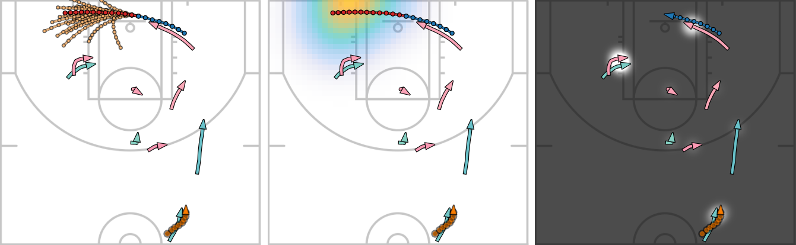

SocialVAE: Human Trajectory Prediction
using Timewise Latents
1Clemson University,
2CIMAT, A.C., Mexico,
3Roblox
In the 17th European Conference on Computer Vision (ECCV 2022)

Abstract
Predicting pedestrian movement is critical for human behavior analysis and also for safe and efficient human-agent interactions. However, despite significant advancements, it is still challenging for existing approaches to capture the uncertainty and multimodality of human navigation decision making. In this paper, we propose SocialVAE, a novel approach for human
trajectory prediction. The core of SocialVAE is a timewise variational autoencoder architecture that exploits stochastic recurrent neural networks to perform prediction, combined with a social attention mechanism and a backward posterior approximation to allow for better extraction of pedestrian navigation strategies. We show that SocialVAE improves current state-of-the-art performance on several pedestrian trajectory prediction benchmarks, including the ETH/UCY benchmark, Stanford Drone Dataset, and SportVU NBA movement dataset.
Downloads
Video
Bibtex
@inproceedings{socialvae2022,
author = {Xu, Pei and Hayet, Jean-Bernard and Karamouzas, Ioannis},
title = {SocialVAE: Human Trajectory Prediction using Timewise Latents},
booktitle = {European Conference on Computer Vision},
year = {2022},
organization={Springer}
}